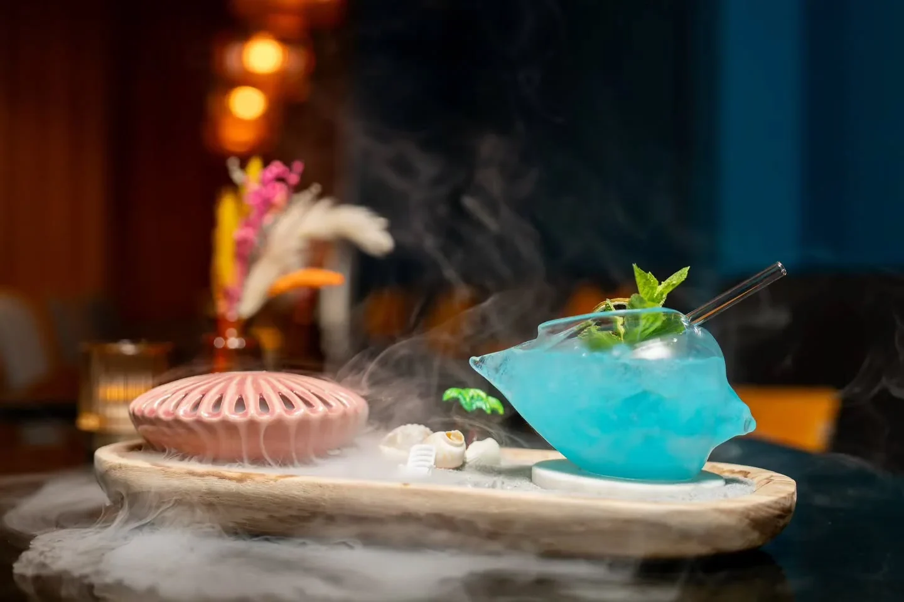
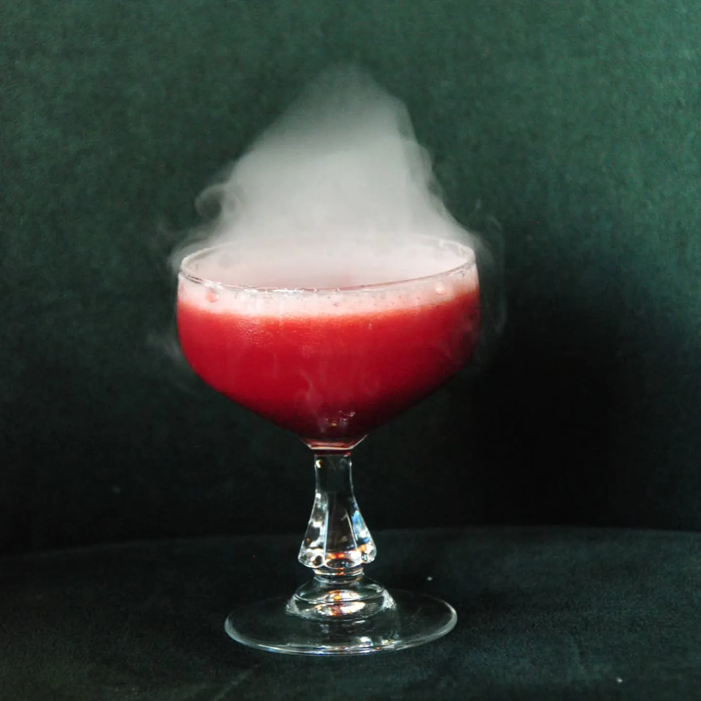
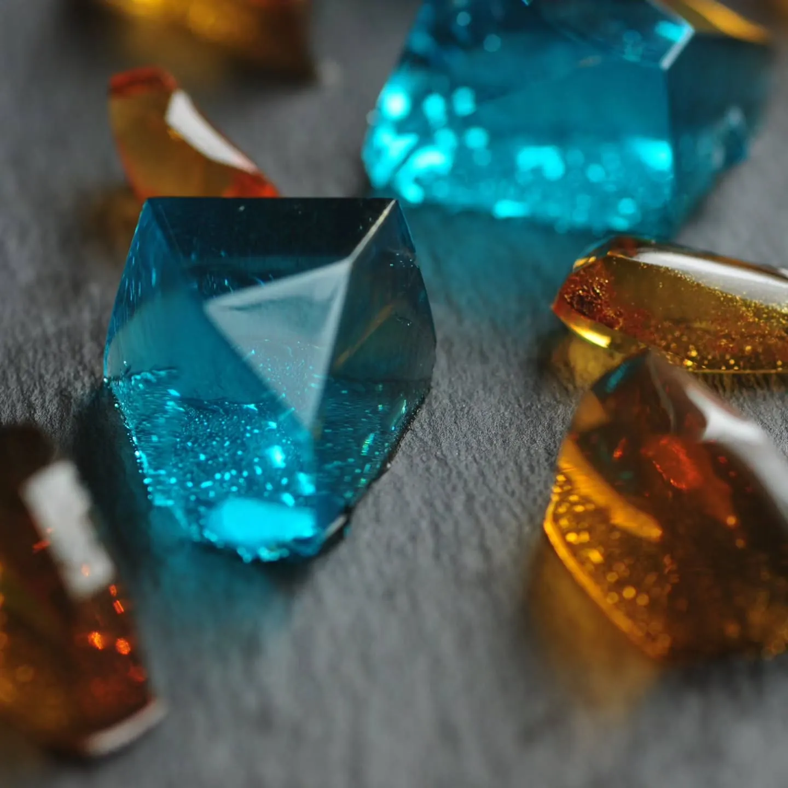
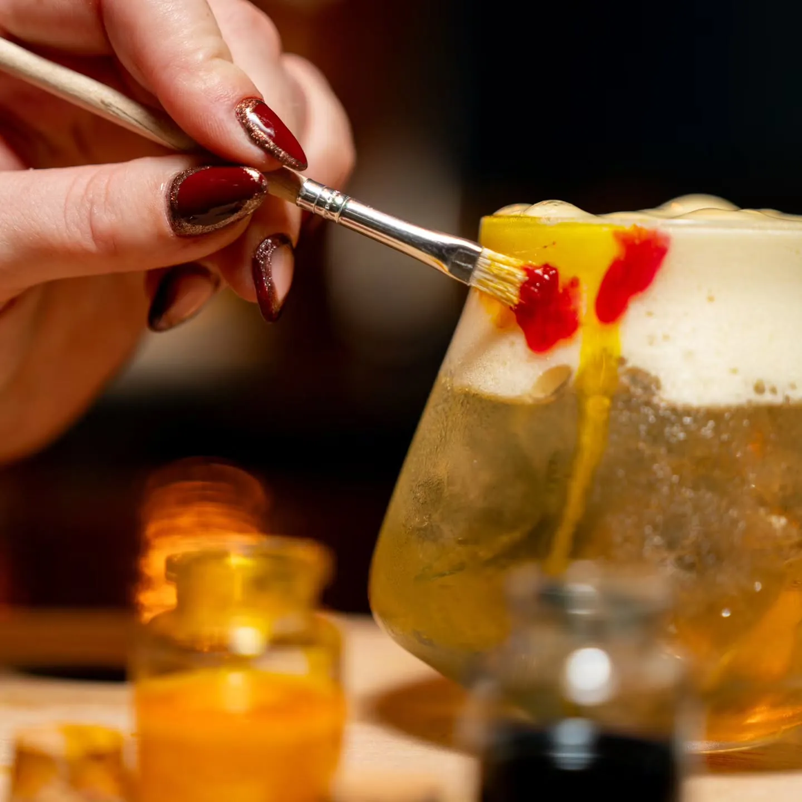
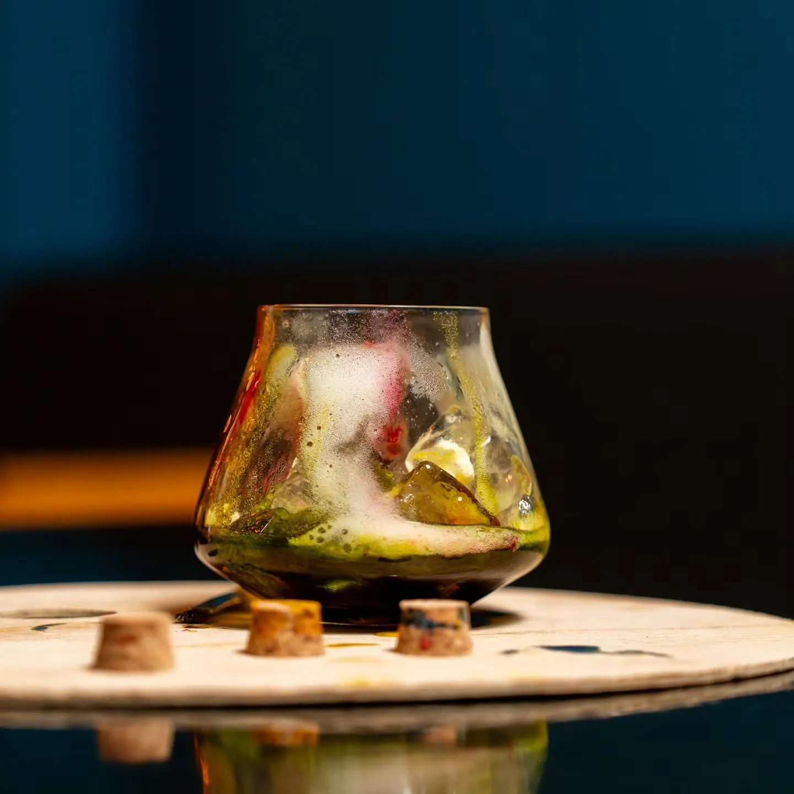
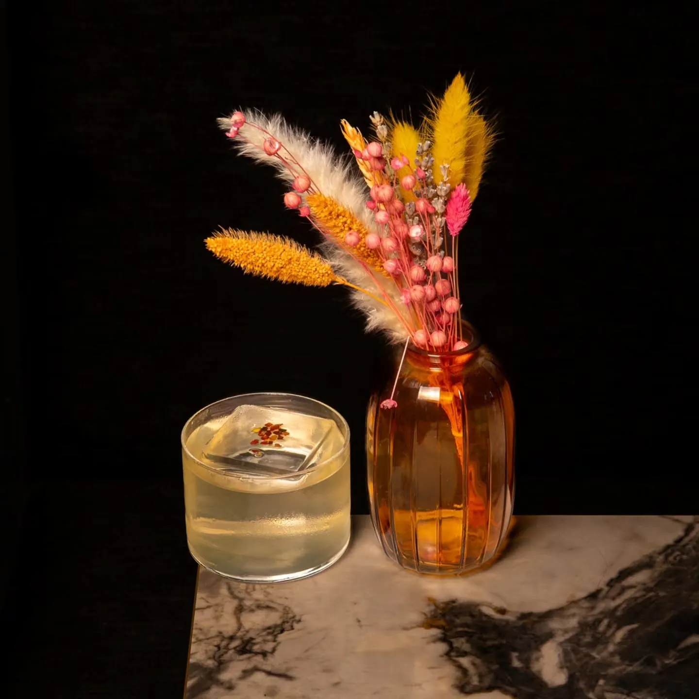
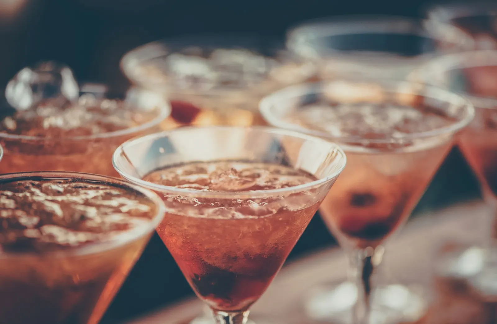
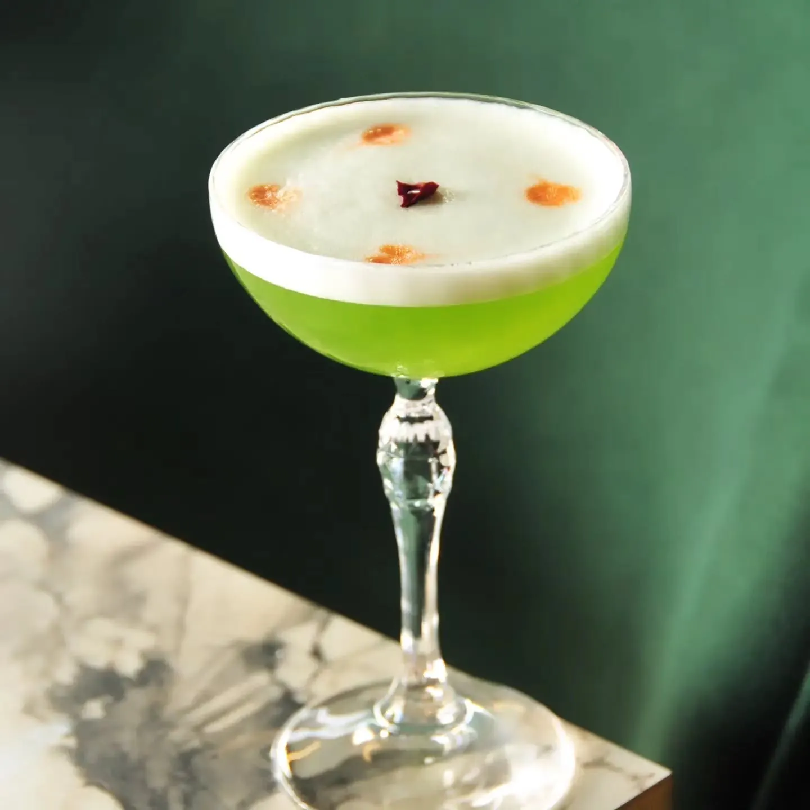

Eerst zie je mist. Dan je cocktail.
Twintig plaatsen, kaarslicht en fluweel, een paar stappen van de Markt. Je cocktail komt aan tafel onder een deksel, in een houten kist of met een penseel ernaast.
Elk glas heeft een moment.
Dat moment gebeurt aan jouw tafel. In september gingen we als Belgische winnaar naar Bols Cocktail Fever. Dit ging de voorbije weken over de bar.
 Met whiskey
Met whiskeyDe whiskeykist
Verzegeld op tafel. Deksel open, de zeemist rolt eruit, en daar staat je glas op gouden ijs.
 Signature
SignatureSmaragd op ijs
Groene gloed op crushed ice, met een gekoelde lepel.

Zonder alcoholKaan's Frambo
Verse frambozen, botanische tonen, nul procent.
 Droog ijs
Droog ijsOnder het deksel
Eerst zie je alleen mist. Dan gaat het deksel eraf, aan je tafel.

BeperktThe Gemstone Experience
Cocktail-jellyshots in de vorm van edelstenen. Niet altijd te krijgen, en op is op.

De laatste stap is voor jou.
Een clarified milk punch met een fluwelen schuimkraag. Ernaast drie flesjes eetbare botanische verf en een penseel.

Een slok zoals hij op tafel komt: helder, zacht, met een kraag van schuim.

Drie flesjes met kurk, drie smaken. Ruik eens en kies.
Op het schuim of in het glas. Elke slok smaakt een beetje anders.

Stap uit de kou. Zak weg in het fluweel.
Okergele zetels, gouden tafeltjes en een kaarsje op elke tafel. De schilderijen aan de muur zijn van Lore (@art_rycke), en haar kleuren zie je terug in onze glazen.



Wat gasten zeggen
"Bijna te mooi om op te drinken, maar toch zeker doen want ze zijn top!"Bauke Coddens, op Google
"Zo aangenaam verrast door deze plek! We kwamen langs met het idee lekkere cocktails te proeven maar het heeft ons echt meer dan overtroffen. Superlekker en de magie krijg je er zomaar bij!! THE place to be!!!"
"Leuke cocktailbar, geweldige cocktails die fantastisch gepresenteerd worden. In hartje Brugge, zeer vriendelijke eigenaar met een passie voor zijn vak. Wij komen zeker nog eens terug!"
"Zulke originele en heerlijke cocktails hier! Echt een experience met een verhaal bij ieder drankje en echt unieke dingen om te proberen, allemaal kunstwerkjes."
Binnenlopen mag.
De deur gaat open om 16 uur. Wil je zeker zijn van een plekje, zeker op vrijdag of zaterdag? Stuur ons dan even een berichtje.
- Maandag16:00 tot 00:00
- Dinsdag16:00 tot 00:00
- WoensdagGesloten
- DonderdagGesloten
- Vrijdag16:00 tot 01:00
- Zaterdag16:00 tot 01:00
- Zondag16:00 tot 00:00

